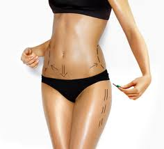

oxivenacion

Proceso por el cual se coloca oxigeno endógenos previamente preparado por un equipo especial para este procedimiento.
Beneficios:
En trastornos vasculares periféricos. Flebitis, tromboflebitis, edemas linfáticos, trastornos geriátricos, alteraciones cerebrales, perdidas de la memoria, insomnio agotamiento físico y mental. Utilizado de igual manera como terapia de apoyo para tratamientos del cáncer.
Beneficios:
En trastornos vasculares periféricos. Flebitis, tromboflebitis, edemas linfáticos, trastornos geriátricos, alteraciones cerebrales, perdidas de la memoria, insomnio agotamiento físico y mental. Utilizado de igual manera como terapia de apoyo para tratamientos del cáncer.
